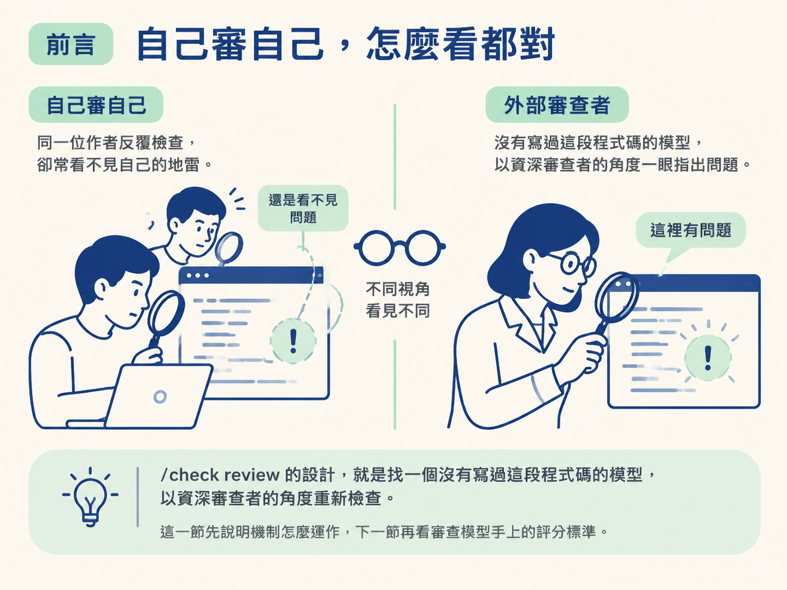
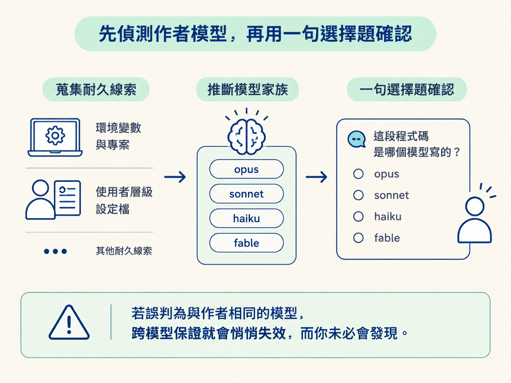
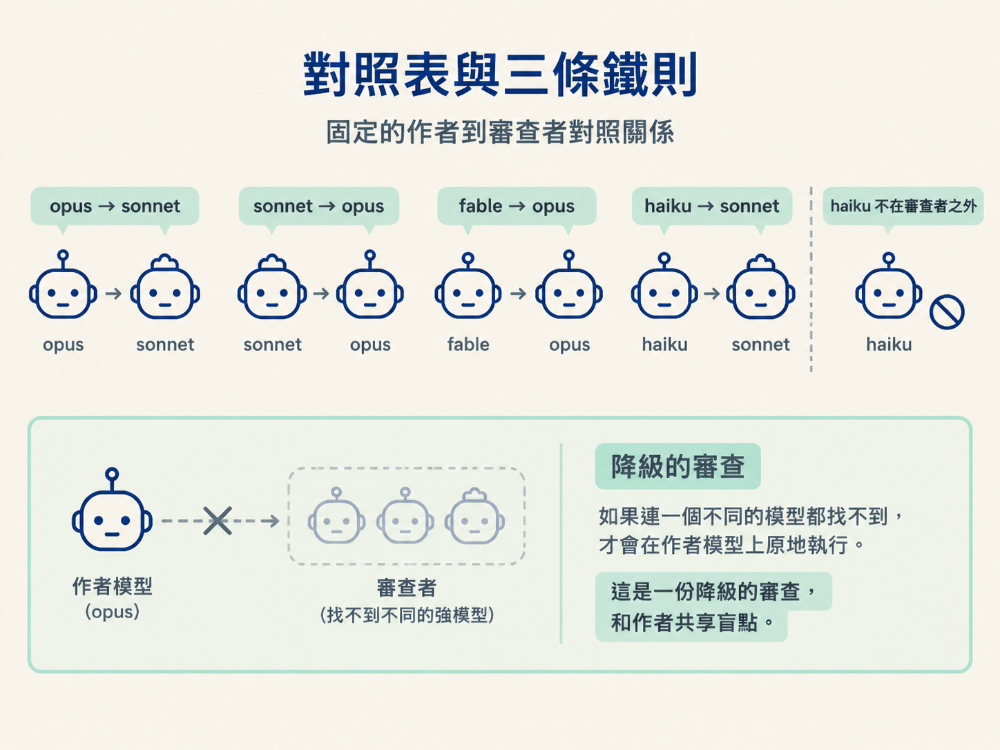
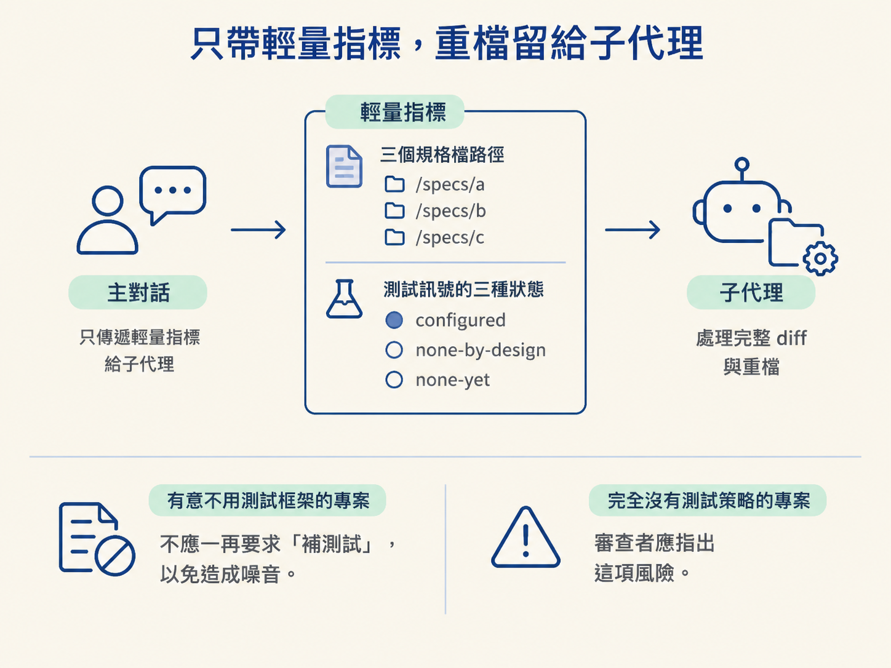
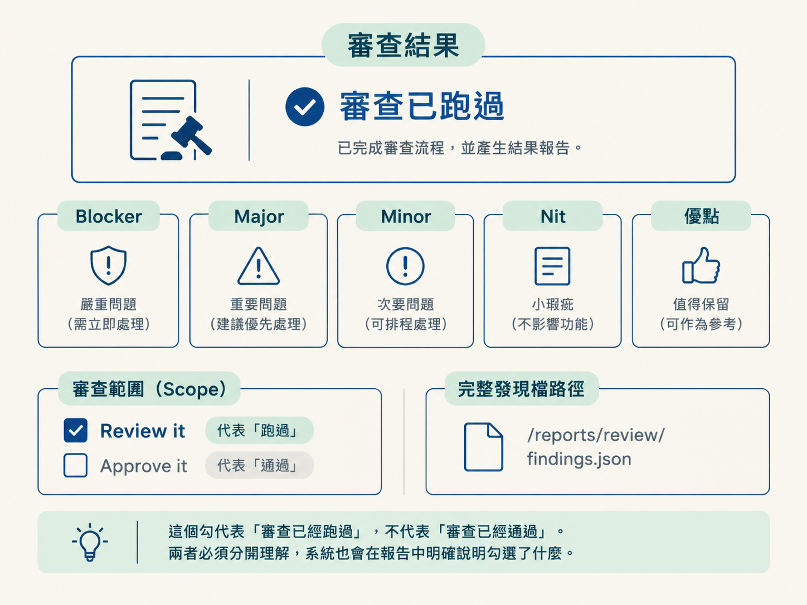

完成這一節後，你應該能說清楚 review 的跨模型不變量，並實際跑完一輪審查：偵測與確認作者模型、選擇不同的審查模型、界定 diff 範圍，再由唯讀子代理產出依嚴重度排序的發現。
你可能遇過這種情況：一段程式碼自己來回看了十遍，覺得一切正常；隔天同事只花兩分鐘，就指出一個你完全沒注意到的地雷。
這不一定是你不夠仔細。每個人看自己寫的東西時，都會帶著一套看不見的假設。那些你認為「這當然不會發生」的情況，往往會被眼睛自動略過。
把審查交給 AI 也一樣。如果讓寫出程式碼的同一個模型再看一次，它很可能沿用原本的假設，因此也看不到同一批問題。關鍵不在於模型夠不夠聰明，而在於它和作者共享盲點。
/check review 的設計，就是刻意避開這個問題：找一個沒有寫過這段程式碼的模型，以資深審查者的角度重新檢查。這一節先說明機制怎麼運作，下一節再看審查模型手上的評分標準。

review 有一條不能打折的規則：審查必須使用和作者不同的模型。這正是它和一般「請 AI 幫我看一下程式碼」最大的差別。
如果模型審查自己的輸出，就可能系統性地漏掉自己的盲點。一旦這項保證被破壞，整份審查的價值就會打折，而且通常不會出現明顯的錯誤訊息提醒你。
這件事不需要你自己接 API 或設定流程。系統會在子代理中使用對照的 Claude 模型執行審查。整個過程對被審查的程式碼是唯讀的：子代理只產出發現，不會修改程式碼。
如果你想要更獨立的意見，或想改用其他供應商，例如 GPT 或 Gemini，建議是先切換自己的模型，再重新執行一次。review 不會自行把程式碼傳到其他地方。
要換成不同模型，得先知道原本是哪個模型。但這件事不能只靠模型自我介紹。
系統提示裡的「你是由某某模型驅動」是在對話開始時寫入的；一旦你用 /model 切換模型，那段資訊就可能過時。模型本身也無法可靠地辨認自己是哪一個模型。
因此，系統改用比較耐久的線索：環境變數中的模型設定，以及專案與使用者層級的設定檔。讀取後，再把模型代號對應到模型家族，例如 opus、sonnet、haiku、fable。
偵測完成後，系統仍會問你一句選擇題：「這段程式碼是哪個模型寫的？」，並把偵測結果設成預設選項。
這一步看似多餘，其實是在守住整條保證。假如偵測錯誤，誤判成和作者相同的模型，跨模型審查就會悄悄失效，而你未必會發現。

只有兩種條件同時成立時，才會跳過這個確認：偵測結果非常明確，而且你已經明確指定審查模型。除了這一句，蒐集範圍、執行審查與寫入發現時，系統不會再逐項詢問。
確認作者模型後，系統會選擇對照的審查模型。對照關係是固定的：
opus，由 sonnet 審查。sonnet，由 opus 審查。fable，由 opus 審查。haiku，由 sonnet 審查。haiku 不會擔任審查者，因為審查屬於高價值的推理工作，需要使用較強的模型。
整個選擇邏輯可以濃縮成三條鐵則：
haiku 擔任審查者。有些組織政策會限制可用模型；有些 AI 工具的子代理會直接繼承母體模型，例如 Antigravity 的 invoke_subagent。如果因此無法叫出另一個強模型，系統會先退到「最強、但和作者不同」的模型。
如果連一個不同的模型都找不到，才會在作者模型上原地執行。此時必須明確說明：「這是一份降級的審查，和作者共享盲點。」不能把它包裝成正常的跨模型審查。

如果你的指令已經指定審查模型，系統也只會在它和作者不同時照做。若你指定的其實是作者模型，系統會拒絕，並解釋原因：「那就是寫這段程式碼的模型，用它來審會共享盲點，我改用另一個。」
開始審查前，系統還會把選定的組合講清楚，例如：「作者是 opus，我用 sonnet 來審，第二個模型才看得見作者看不見的地方。」
選好審查模型後，下一個問題是：到底要審哪些改動？這裡的原則是讓主對話保持輕量。
主對話只蒐集檔名與基準點，不讀取完整檔案內容。真正的 diff 會交給子代理處理，由子代理自行執行指令並讀取檔案。
審查範圍有兩種模式，取決於你目前所在的分支：
main，不存在時改用 master。如果目前就在 base 分支上，代表你直接在主線工作，因此只審查尚未提交的工作區改動。你也可以直接指定 /check review uncommitted，強制只審查尚未提交的改動。
蒐集檔名時，系統會先去除重複項目，再把鎖定檔與生成物排除在檔案數量之外，例如 dist/、build/ 這類產物。這是避免檔案數字看起來過度膨脹；子代理仍然會看到完整的 diff。
如果比對後發現根本沒有改動，系統不會硬跑審查，而是停下來告訴你：沒有東西可以審，請先做一些改動，或把範圍指向某個分支。
主對話只需要幾項輕量資訊。系統會列出 docs/specs/ 底下最近的三個規格檔，但只提供路徑，不讀取內容；同時判斷專案的測試訊號屬於哪一種狀態。
測試訊號分成三態：
configured：專案已設定測試框架，審查者可以正常評估測試覆蓋率。none-by-design：專案刻意不設定測試框架，改用型別檢查與 /check verify 作為關卡。這是明確選擇，不代表偷懶。none-yet：專案沒有測試框架，也沒有說明任何替代慣例。這是真正的缺口，值得在裁決層提出一次。把這三種狀態分開很重要。對一個刻意選擇不用測試框架的專案，反覆要求「補測試」只會製造噪音；但對完全沒有測試策略的專案，審查者就應該指出這個風險。

準備好這些資訊後，系統會把專案慣例直接內嵌到交給子代理的提示中，並附上三個規格路徑、基準點與 diff 範圍。
子代理只會讀取治理這次改動的那份規格中的建置相關章節，也就是需求、決策、設計與後果。它不會讀取決策歷史；除非某個具體發現無法解釋，才會回頭查看歷史。
接著，系統會真正啟動審查。它先把這個 skill 的資料夾解析成絕對路徑，再在子代理的啟動提示中附上兩個檔案的路徑：
這裡有一個刻意的設計：母體模型不會把這兩個檔案的內容讀進自己的對話，只會傳遞路徑。子代理啟動後，第一個動作才是讀取範本並依照它執行。
這樣可以讓母體對話保持精簡，也讓範本與評分標準集中在同一個地方維護。
子代理可以讀取檔案、執行指令、搜尋內容與寫入檔案，但沒有編輯工具。它的任務是報告問題，不是修改程式碼。
它唯一的寫入權限，是把審查發現寫成一份檔案。如果某個 AI 工具的子代理無法讀取檔案，系統才會退回把這兩個檔案的內容直接內嵌到提示中。
子代理完成審查後，會把發現寫進 docs/reviews/ 底下，以日期與分支命名的檔案，並回傳一段精簡摘要。
母體模型接著把摘要轉述給你，而且會先給結論：
如果沒有 blocker 或 major，輸出就只保留裁決與尾巴，不再加入多餘說明。
若審查結論是 Blocked 或 Changes requested，或這次本身屬於高風險改動，系統會再提醒你：如果想取得更獨立的第二意見，可以用 /model 切換到其他供應商，再把 diff 貼給另一個助理重新審查，不需要 API 金鑰。
最後，如果 docs/scope/ 裡有這項功能的對應列，系統會把該列的 Review it 勾起來。
這個勾代表「審查已經跑過」，不代表「審查已經通過」。兩者必須分開理解，系統也會在報告中明確說明勾選了什麼。

review 在轉述結果後就結束。它不負責修正發現，也不會自行啟動下一個階段；要不要修改，是寫程式的人的工作。
review 的核心是那條不能彎的規則：審查必須使用和作者不同的模型，因為同一個模型審查自己時，會共享原本的盲點。系統先從耐久的設定中偵測作者模型，再用一句選擇題確認；猜錯會悄悄破壞跨模型保證。確認後，它會選擇不同的審查模型，而且不會使用最弱的模型擔任審查者。接著，它界定 branch 或 uncommitted 的審查範圍，只傳遞輕量指標，把完整 diff 留給子代理處理，並提供測試訊號，讓審查者知道是否應該要求測試。子代理只有讀取與寫入發現的權限，沒有編輯工具。審查完成後，由母體模型轉述裁決，最後把 scope 中的 Review it 勾起來；這代表審查跑過，不代表審查通過。
機制看完了，但審查子代理憑什麼判斷「這是 blocker」或「這只是 nit」？它手上的那把尺，決定整份審查是專業判斷，還是隨口抱怨。下一節就把這把尺攤開來看。